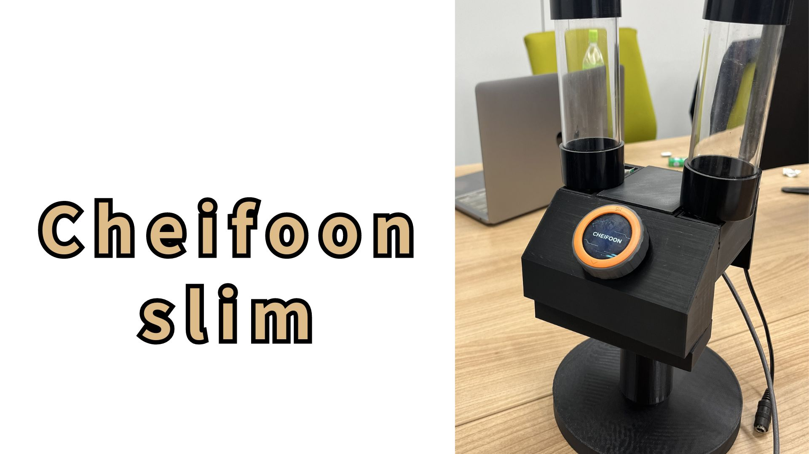
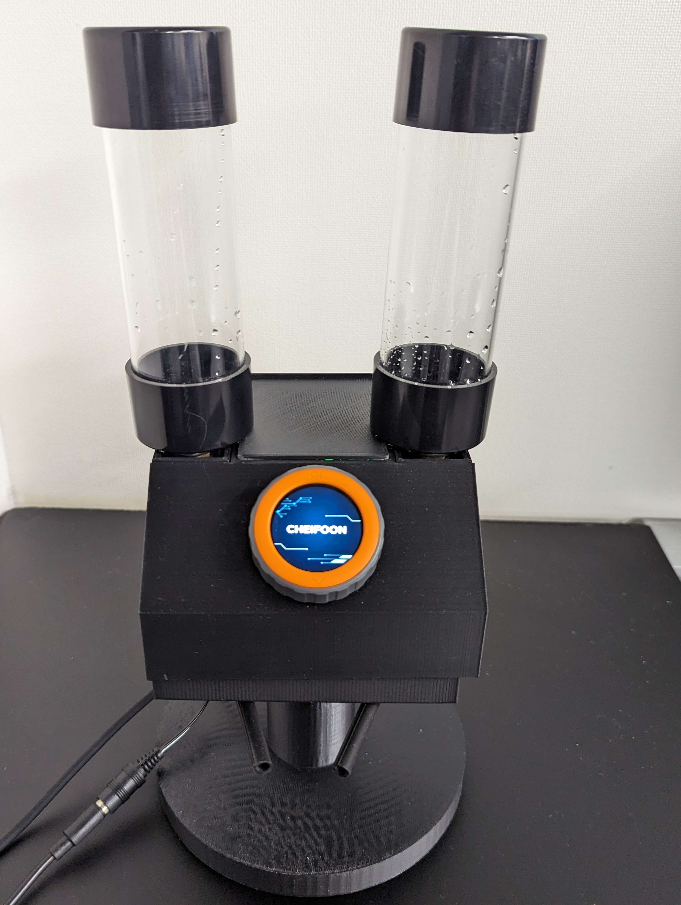
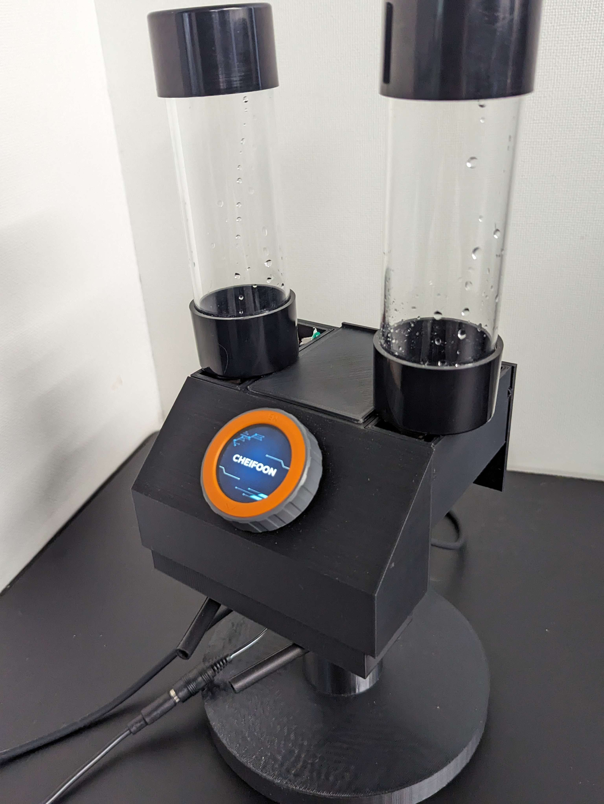
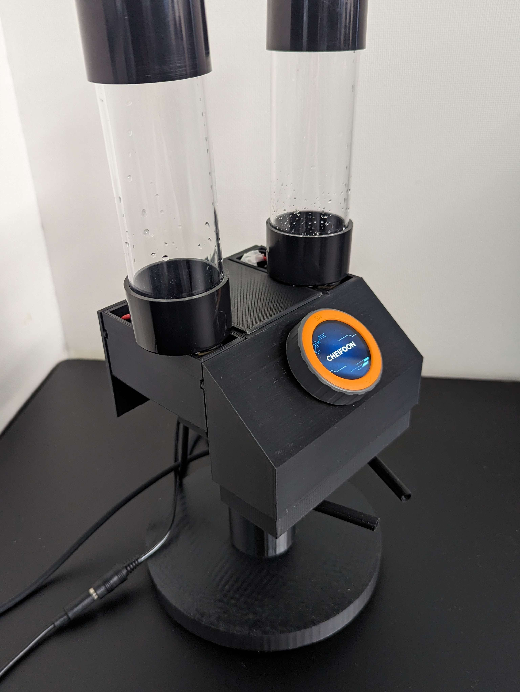

料理を簡単にできるように、調味料を正確な分量出してくれるお助けツール。
Cheifoon 小型バージョン。
URL
https://protopedia.net/prototype/5058
システム概要
料理をする際、レシピには大さじ1や小さじ2などの分量が載っていますが、正確に量って入れるのは少し面倒くさいですよね。
そんな時、これを使えば必要な分だけを正確に出してくれます！
キャッチコピー
簡単操作でぴったり出せる！
あなたの家の小さな料理長！
役割
ダイアル操作、描画、マイコン制御をArduinoにて実装。
ターゲット
調味料を量るのが面倒くさい人
備考
Cheifoon seriesの作品で、Cheifoonをよりコンパクトにしたもの。
描画及び操作にM5Dialを使用し、センサー機能を非搭載にすることで小型化した。